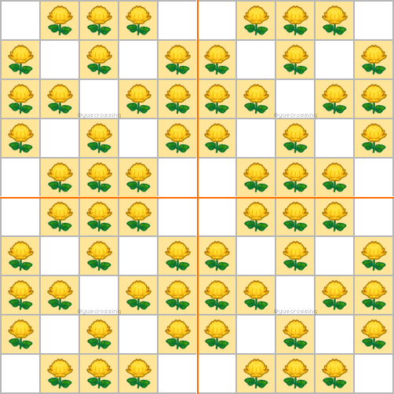
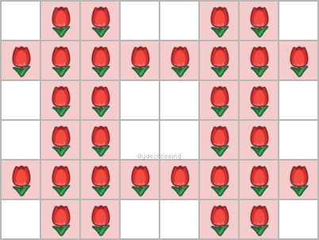
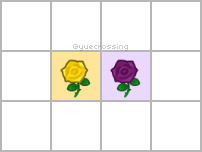
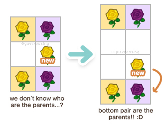
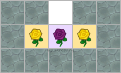
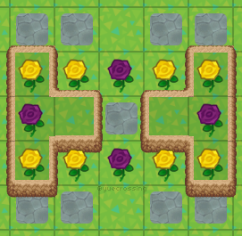
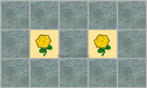
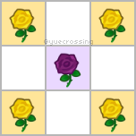

Last update: 06/03/2020 5am EST.
Contact me if you see any mistakes or if you have suggestions.
Wondering what's the best way to plant your flowers to optimize production? Welcome to my super
long layouts guide!
Follow the flowchart below to figure out what is the best garden set-up for your needs!
(Remember that these are our recommendations, and the layouts are totally flexible to your own
preferences).
AGAIN: it is very important that you understand the difference.
Breeding is 2 flowers mixing genes to make 1 offspring. Cloning is 1 flower making 1
exact copy of
itself.
If you are struggling with understanding this concept, please read Gardening 101.
We usually don't want a layout that can do both!
Reproduction Algorithm 101
Flowers have a chance to reproduce once per day (when you first start your game, or at 5AM).
If a flower rolls "successful" at reproduction, it will then look a valid partner (same species) in
the 3x3 space around itself to breed with, and then produce an offspring.
If it does not find a valid partner, it will make a cloned offspring.
i.e. breeding takes precedence over cloning whenever possible.
When a flower is successful, it (and its partner) are marked as invalid or "locked". They cannot
produce until the next day.
A big problem with many ACNH flower guides on the internet is that they recommend checkerboard and X
layouts.
They are presented as breeding layouts (to make new colours). However, they are highly susceptible
to cloning.
Let's first take a look at the X layout.
Why is X a bad layout?
To a beginner, this may look like a decent breeding layout.
All
the flowers are touching!
However, if you circle a potential production outcome, we can see that this layout can only
breed a maximum of one time (each flower can only act as a partner once a day), resulting in
lots of possible cloning.
This is a big waste of our time! We can do a Diamond layout instead to
improve breeding.
Now let's look at how the Checkerboard layout is impacted.
Why is Checkerboard a bad layout?
Applying the same logic as above, we can see that Checkerboard is a big YIKES.
Look at all the clones that we might get with this layout! Leif would be disappointed with you.
(This problem is not very significant at 0V waterers, but
is a big issue at 5V).
The layouts in this guide are systematically tested and simulated to focus on a specific goal while
maximizing efficiency!
"All Flowers" Layouts
J_MASTER's 12x12 Breed Everything Layout
This all flowers layout uses a 12x12 space to get at least one of each flower. It
utilizes the fastest direct paths for every color (see paths and folklore blue rose
method). It takes approximately 63
days to get all flowers using this method with 0 visitors, or 13 days at 5 visitors. You can further
speed the process up by doubling the layout.
BackN's optimized 39x21 layout uses a different method. Instead of relying on the
fastest direct paths to any single flower, BackN's method relies on combinations of flower
parents that can create as many different other colors as possible (example: hyacinths). The layout works well at 0 or 1 visitors watering.
Breeding 1 species where parents are the same color.
Strengths:
Simple and easy. 100% clone-resistant. Ideal single-species same-parent breeding layout.
Weaknesses:
Not space efficient.
How to tile:
Make sure there is space inbetween each set of 2x2. Leave empty spaces on opposite sides
of the 2x2 square as shown.
Turtle (tiled: "Super-Turtle")
Uses:
Breeding 1 species where parents are the same color.
Strengths:
Dense and space efficient. Also the name is cute.
Weaknesses:
Not 100% clone resistant. tetris-T and ladder are better with more visitors.
How to tile:
Tile right next to each other, leave empty space around entire layout if possible. (also
known as super-turtle)
Hexahole ("Hexhole")
Uses:
Breeding 1 species where parents are the same color.
Strengths:
Dense and space efficient, more offsprings than turtle at 0
visitors, more clone-resistant than turtle.
Weaknesses:
Not 100% clone resistant. tetris-T and ladder are better with more visitors.
How to tile:
Tile the "hexahole component" below as needed depending on the size of your field.
(no need to copy exact size, just understand the "piece" and follow the pattern).
Breeding 1 species where parents are the same color.
Strengths:
Dense and space efficient. Better than turtle and hexahole with more visitors. Approximately 7% more flower
efficient and 2% more space efficient.
Weaknesses:
Not 100% clone resistant.
How to tile:
You can put them right next to each other. Put 4 copies of the layout together for
"10x10 Tetris-T".

Ladder ("dense diamonds but without the multi-species
part", "formerly 'intertwined diamond-like' but not called that anymore because Yue didn't like
it")

Uses:
Breeding 1 species where parents are the same color.
Strengths:
Dense and space efficient. Better than turtle and hexahole with more visitors. Approximately 6% more flower
efficient and 2% more space efficient.
Weaknesses:
Not 100% clone resistant.
How to tile:
You can put them right next to each other~
Breeding Layouts [different parents]
Isolated Pairs ("Independent Pairs", "IP")
Uses:
Breeding 1 species (parents can be same or different colors).
Strengths:
Everything-- 100% clone resistant, focus on individual gene combinations.
Weaknesses:
Space inefficient. You can adjust it to be more space efficient with cliff-assisted
IPs or multi-species dense IPs.
How to tile:
Just make sure there is space inbetween each set of IP.
Diamond
Uses:
Breeding 1 species (parents can be same or different colors).
Strengths:
100% clone resistant.
Weaknesses:
Less space-efficient compared to isolated pairs. IP is
better.
How to tile:
Ensure that each set of diamond is not touching. It is slightly more space-efficient if
you stagger each diamond. DO NOT tile diamond into checkerboard.
Isolated Pairs (cliff-assisted)
Uses:
Breeding 1 species (parents can be same or different colors).
Strengths:
All the strengths of how good IP is with bonus
space-efficiency.
Weaknesses:
You have to deal with cliffs bro.
How to tile:
Like always, ensure each IP is not touching another.
Breeding Layouts [multi-species]
Dense Isolated Pairs
Uses:
2+ species breeding (parents can be same or different colors).
Strengths:
All the strengths of how good IP but more space efficient!
Easy to maintain and water.
Weaknesses:
Prone to failure (20-30%), which means when a flower fails to breed simply because
there is no more empty space for it to make an offspring. You need to solve this problem
by using offset dense IPs or by ensuring there is an
extra free column at at each end of
the full layout.
How to tile:
Make sure there is empty space between each column. Leave a column of space at each end,
especially if lots of visitors.
Offset Dense Isolated Pairs
Uses:
2+ species breeding (parents can be same or different colors).
Strengths:
SO GOOD. Ideal breeding layout. All the strengths and space efficiency of dense IP + slightly lower failure rate.
Weaknesses:
Not much. (Can look messy, some people chose standard dense IP for "organized" aesthetics).
How to tile:
Like below. Leave a column of space at each end, especially if lots of visitors.
Dense Diamonds
Uses:
2+ species breeding (parents can be same or different colors).
Strengths:
Two overlapping diamonds for more space efficiency.
Weaknesses:
Visually much more disorganized than offset dense IPs.
Less space efficient because tiling dense diamonds is super awkward.
How to tile:
... You do your best. Just like regular diamonds, staggering them a little bit is nice
(at that point just do offset dense pairs man lol...)
Cloning Layouts [single-species]
Isolated Clones
Uses:
Standard cloning layout for just one species of flower.
Strengths:
Easy & simple! Make sure it is not touching another flower of the same species. 0%
failure rate.
Weaknesses:
Bad space efficiency.
How to tile:
Again, just ensure they are not touching
Cliff Cloning (single-species)
Uses:
Cloning a single species of flower.
Strengths:
Good space efficiency, exactly 1:1 empty space for each flower to clone onto. 0% failure
rate.
Weaknesses:
You have to deal with cliffs bro.
How to tile:
You can tile it horizontally like picture A. To tile the layout vertically, put one
extra space inbetween like picture B (to minimize failure rate), or put down a row of
stone path between the vertically tiled sections.
A
B
Cloning Layouts [multi-species]
Clone Rows
Uses:
Cloning 4+ species of flowers.
Strengths:
Super space efficient, easy to maintain, easy to water.
Weaknesses:
None, really. It does require 4 species though. Small chance of failure.
How to tile:
Just make sure there is space between two each row.
Same as offset clone rows, but with 2 empty spaces between each row.
Strengths:
Provides allowance for higher production rates (from visitor bonus) to reduce failures.
How to tile:
Planning, planning, planning. Same thing as offset clone rows with more spacing
inbetween each "pair" of clones.
Cliff Cloning (multi-species)
Uses:
Cloning 2 or more species of flowers.
Strengths:
0% failure rate. Good with 5v bonus!
Weaknesses:
You have to deal with cliffs bro.
How to tile:
Ensure there's 2 empty spaces between each "pair" of clones.
Testing Layouts
Testing layouts are used for Folklore/Paleh blue rose
methods.
In the aforementioned blue rose methods, we will need to tell whether an unknown purple rose 𝑥
[0?20]
is a purple rose α [0020] or purple rose β [0120]. We do this by breeding purple rose 𝑥 with a seed
yellow rose [0200]. If purple rose 𝑥 successfully produces a yellow rose [0210] with seed yellow
rose
[0200], we can deduce that it is purple rose β [0120].
I can't actually think of another scenario where testing layouts are necessary, as typically it is
faster to use more direct flower paths (testing can be a big bottleneck). If there is a genotype you
want to test, you can play around with flower
simulator to see if there's an appropriate pairing.
1+1 Testing

How to use:
A simple isolated pairs testing layout. Read explanation
on testing layouts first.
How to tile: (IMPORTANT!)
With regular isolated pairs, we can put the pairs next to each other with 1 empty space
in between. However, if we do this with testing pairs, you will be unable to tell which
purple rose 𝑥 pair the offspring is from. Make sure you double space each 1+1 testing
pair so you will be able to know the parents of the offspring!

2+1 testing

How to use:
2 seed yellows surrounding 1 purple rose 𝑥. There is only one available spot for an
offspring to spawn. All other surrounding tiles are blocked (e.g. with hard paths,
fencing, etc.).
Explanation:
2+1 layouts are great testing layouts because there is only 1 tile for an offspring to
spawn on. All other tiles are blocked off. Following the reproduction algorithm, ideally
one purple/yellow pair will breed. The third would clone, but have no space to clone
onto and therefore fail.
But why do we need a third flower (2 yellow) roses anyways? Following the reproduction
algorithm, each flower has one opportunity to "roll" for breeding every day. Adding a
3rd flower improves likelihood to make an offspring if the first 2 flowers fail!
Thus, this is our most recommended testing layout. We want to speed up the testing
process as much as possible so we can get a blue rose faster!
2+1 cliff testing

How to use:
Read 2+1 testing above, but involves cliffs for more space efficiency.
Leave the middle tile lowered but blocked so you can walk between the upper and lower
section easier (for watering). You can hop across the top section~
Super Advanced Testing Layouts
Extra testing layouts for super nerdy garden scientists!
Pre-watering your yellow roses!

Usage:
Start the bad-luck bonus (water counter) before the testing/breeding process
begins.
Totally unnecessary if you have visitors watering though. Good for if you have 0
visitors.
How to use:
While waiting to make a purple rose 𝑥, you can pre-water yellow roses. You will
need to block off the yellow roses completely such that there is no available space
for it to spawn an offspring. Once your purple rose 𝑥 is ready, you can remove the
blockers and plant the purrple rose. Do NOT dig up or move the yellow rose once you
start pre-watering.
Explanation:
From Gardening 101: "A
flower
gains 5% additional production chance for every time it fails after the third try. A
hidden water counter tracks this". We are essentially forcefully increasing the
water counter and improve production bonus beforehand. (Additional reading: Water Counter).
Again, totally unnecessary if you have visitors. (2+1 has 99.2% daily success at 5v
already!)
Bonus:
Pre-watering is also great if you are bottlenecked at a certain step! (e.g. you have
one parent for a recipe, but are waiting for the other parent).
4+1 testing ("remember the forbidden X layout?")

Usage:
Only use if you know wtf you're doing. Please.
If you ask me questions about this I will tell you to just use 2+1. And smack you.
Good for if you have 0 visitors. Unnecessary and total overkill otherwise.
Explanation:
OK so. /deep breath
Following the reproduction algorithm, we know that at this layout can create 3
scenarios.
No offsprings are produced: ok cool. Nothing happened.
One offspring: purple rose 𝑥 bred with one of the 4 yellow roses. Cool,
easy
situation.
Multiple offsprings: purple rose 𝑥 bred with one of the 4 yellow roses. One
of them are a child as a result of the breeding. The other are clones. Now
what? Keep reading.
So, we got multiple offsprings.
Keep in mind: One of them is a child. The other are clones.
If you got all yellow offsprings, this means that purple rose 𝑥 made a yellow child
(remainder are yellow clones). You can conclude that it is purple rose β. If you got
one white, it means that purple rose 𝑥 made a white child and the remainder are
clones.
If you don't understand, please just do 2+1MY REW.
Bonus:
X layout is also decent for color-safe breeding (resulting offspring can be
differentiated from a clone) for players with no visitor watering. Again unnecessary
for players who get visitor water.